参考 CINEMA 4D CINEMA 4D Prime 渲染菜单 编辑渲染设置
Function available in CINEMA 4D Prime, Visualize, Broadcast, Studio & BodyPaint 3D
渲染设置 基本 输出 保存 多通道 抗锯齿 材质覆写 选项 立体 Team Render保存
 常规图像
常规图像
保存
当渲染到图片查看器时自动保存图像或动画。
文件…
你可以在这里输入完整的路径，或者在右侧的路径按钮上点击，打开系统对话窗来选择文件夹。
如果你只输入了一个名称而没有路径，图片或者动画会被保存到场景的文件夹中。
RELEASE 17
要使用相对路径，请在路径名称前加上一个英文句点：
- ./xy/beauty 会保存一个名为 beauty 的文件到场景文件路径下的 xy 文件夹。
- ../xy/beauty 会调到场景文件所保存的路径的上一级。在这个示例中，一个名为 beauty 的文件会被保存到名为 xy 的父级文件夹中。
在设置路径时，记住一下几点，避免从一个操作系统移动到另一个时出现文件名问题：文件名最多使用22个字符。例如，Mac OS 9.1 有如下限制：文件名长度最大为31个字符，其中4个字符用作扩展名（如 *.tif）、5个字符用作输出帧序列时的序号（如 _0023）。同样，只在文件名中使用如下字符： A - Z、a - z、0-9、_。一些特殊字符也是有效的，但是通常应该避免使用特殊字符来保证最大的兼容性。
提示：
如果你想要文件名和路径名自动参考工程名或设定的渲染分辨率，可以使用
可变路径和文件名，这样每次渲染不同分辨率时你就不用修改文件名或路径名了，还可以避免覆盖已有的文件。
格式
选项…
这个按钮只有当格式设置为 AVI 影片（Windows）或 QuickTime 影片（Windows 和 Macintosh）时才可用。
点击这个按钮会打开一个对话框，在这里可以进行各种编码和其他设置。如果没有打开对话框，请检查是否安装了最新版本的 QuickTime。
如果在 Windows 上安装了 QuickTime，则会有额外的几种可用的格式，列表如下。根据选择的格式，点击右侧的“选项”按钮可以对格式的选项进行修改（例如为视频格式使用 JPEG 压缩）。
以下应用于 RLA/RPF：
RPF 格式是一种由 RLA 发展而来的格式。这两种格式都可以用来给图像分配多个通道，便于在 After Effects® 或 Combustion® 等后期合成软件中使用。
RPF 格式包含如下通道（RLA 只通过 Coverage 包含 Z 通道）：
Z
相机与对象的距离信息，用来制作景深效果。
对象
在后期编辑中可以使用不同材质。
UV 坐标
UV 坐标的信息，用来在后期编辑中将纹理贴图置入到正确的地方。
正常
关于对象和纹理的方向信息。
无限颜色
对象颜色的信息，可超过 RGB 色域。
覆盖
对象边缘的抗锯齿信息。
对象标识（仅 RPF）
Enables the clear identification of objects.
颜色（仅 RPF）
对象的颜色信息。
透明度（仅 RPF）
对象的透明度信息。
子多边形权重
亚像素的颜色信息。
子多边形蒙版
链接到对象的亚像素的信息。
深度
设置每个颜色通道的位深，可以选择 8 位/通道（24 位色）、16 位/通道（48 位色）或 32 位/通道（96 位色）。每种格式支持的颜色深度和其他信息参见此表。
HDRI 格式
提示：
In the following, HDR images are discussed. These does not exclusively mean ,radiance (HDR)’ but also includes OpenEXR and all other formats that can handle images with a high dynamic range.
The standard version of Cinema 4D can output, load, and render HDR images (e.g., if you want to use HDRI textures for reflections).
This lets you take full advantage of maximum color and brightness when outputting your Cinema 4D images. Internally, Cinema 4D renders with substantially higher color and brightness (98-bit / pixel) than can be realized on a conventional RGB image.
This limitation does not exist for images rendered to the HDRI format.
The following formats are able to read this color depth:
- Radiance (HDR)
- OpenEXR
- BodyPaint 3D (rendered with 32-bit/channel)
- TIFF (rendered with 32-bit/channel)
- PSD (rendered with 32-bit/channel). These images can only be opened with Photoshop CS2.
Using applications that can work with these formats will put you at a great advantage.
So, what is all this good for?
Well, there are several uses:
- HDR formats can be used as photo processing formats when compositing. Ordinary monitors or printers, though, cannot display this depth of color; they use conventional color depth.
One disadvantage of conventional color depths is the limitation in brightness. For example, an RGB value of 255, 255, 255 for the color white is as good as it gets. Let’s say you want to darken an image in post-production that contains a white area, e.g., a surface brightly lit by sunlight through a window. The white area will turn gray, even though the actual color of the surface should start showing through.
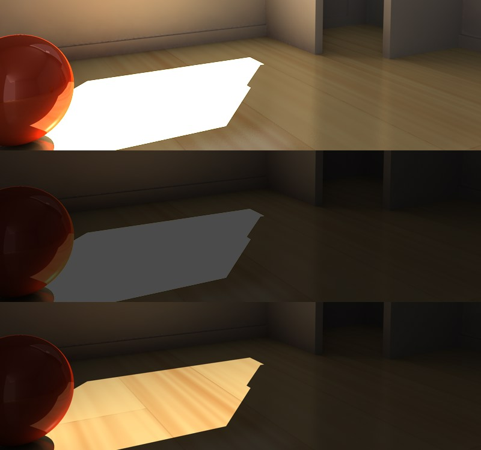Above, the original image; center, the original image darkened in Photoshop output as TIFF; below, the original image output in 32-bit, darkened using the appropriate software.
As you can see in the example above, the HDR image can be darkened (e.g., using Cinema 4D’s Exposure setting) without having to worry about the white surface turning gray, as is the case with the conventional image formats. The above scene was lit exclusively per GI with a very bright light (400%).
The depiction of HDR images is only an interpretation of color data that cannot actually be depicted with conventional technology.
When you render an image in HDR in the Picture Viewer or in the editor view, a special HDR antialiasing mode will be used. At first glance, the image will look flawed. This is due to the fact that the display of the image must be reduced to the limited color range of your monitor. If rendered using a conventional format, the image will be perfectly antialiased since antialiasing takes effect when the color depth is reduced to 8-bit or 16-bit. 32-bit antialiasing is rendered without color limitations, i.e., a smoothed pixel can have a brightness value greater than 100% and will therefore be depicted as white. Correct 32-bit antialiasing will not be visible but it’s there, internally.
- HDR image formats (in particular the HDR formats: HDR (Radiance) and OpenEXR) can be used to render particularly sharp reflections. Simply lay the HDR image in a Sky object’s Luminance material channel, for example. Cinema 4D will take into account the high level of brightness when rendering.
- HDR image formats (in particular the HDR formats: HDR (Radiance) and OpenEXR) are good for use as so-called Image Based Lighting, i.e., the lighting of scenes via GI, exclusively with textures, without the use of light sources.
The classic HDR formats
Both of the classic (whereby the term classic is relative in the fast-moving IT world) HDR formats, Radiance (HDR) and OpenEXR, that are used in numerous rendering pipelines, are now supported by Cinema 4D.
Radiance HDR is the older of the two formats and will most likely eventually be replaced by OpenEXR. Even though OpenEXR exhibits less dynamic breadth compared to HDR (Radiance) (which is basically irrelevant in everyday use, otherwise OpenEXR would not be used in so many Hollywood productions), it can be compressed to a much smaller file size.
Radiance (HDR)
HDR lets you save in a special 32-bit per pixel mode. Radiance HDR possesses vast dynamic breadth, much greater than in nature. This is why HDR files are often very large. Nevertheless, most HDR texture libraries are available in the Radiance (HDR) format.
OpenEXR
This format was developed by ILM (Industrial Light & Magic) and can be compressed to a high degree, despite its wide dynamic breadth.
With the introduction of Cinema 4D R13 files with multiple channels are also supported. Contrary to real Multi-Pass files that contain multiple layers that are overlain via mix modes, OpenEXR only recognizes channels without mix modes (creating actual layers from these channels must be done using a compositing application). Nevertheless, Cinema 4D will attempt to create layers based on channel names upon import.
Clicking on Options will make several save options available:
Instead of overwhelming you with technical details we will give you a general description. The compression methods available either cause a lot of loss, cause color information to be lost or are loss-free (the first 5 in the list below) and maintain the entire dynamic scope.
Especially images that need major or frequent editing, 16-bit float comma compression should not be used because it can quickly lead to imprecise or limited color ranges.
Which compression method is best for your particular purpose should be ascertained by conducting tests to determine the most acceptable correlation between quality, file size and speed of editing.
Name
Many editing programs accept picture sequences. However, they tend to use different naming conventions.
Some programs expect the filename to end with a number, others an extension. Some programs can cope only with three-digit numbers.
Use this menu to set the sequential numbering and/or lettering style required by your editor. In the example names below, 0000 represents any sequential number, TIF represents any three-letter extension.
Name0000.TIF and example result: Test1234.JPG,
Name0000 and example result: Test1234,
Name.0000 and example result: Test.1234,
Name000.TIF and example result: Test123.TGA
Name000 and example result: Test123,
Name.000 and example result: Test.123.
Image Color Profile
With this setting you can define which color profile should be embedded in the image/texture. In versions prior to R12, Cinema 4D automatically saved using the sRGB color profile. This can now be set to any color profile desired. However, you should only make changes to this setting if absolutely necessary.
Note that many programs cannot read color profiles (for example, Windows 7 can only partially read color profiles).
When using Linear Workflow in conjunction with Mult-Passes we recommend that you render with at least 16-bit color depth. If this is not possible, disable the Linear Workflow option to restore the normal Cinema 4D R12 properties (reason: Multi-Passes are saved with a linear profile. QuickTime cannot imbed color profiles and would therefore be read incorrectly when imported into external applications).
More information regarding color management can be found here.
Generally speaking, the default sRGB profile will be the correct profile.
Clicking the button at the right will make the following menu items available for selection:
Color Management Disabled
No color profile will be embedded (will be read in accordance with the Project Settings or bitmap shader settings when the file is opened).
Load/Save
Here you can load a color profile or save an existing one. These files have the extension "*.icc". If an image is loaded here, its color profile will be assumed.
Load From Monitor
You can use monitor(hardware) profiles. However, this is not recommended since your monitor’s color profile will almost never match that of another monitor.
sRGB
Saves the image with sRGB color profile.
Linear
Saves the image in a linear color profile.
Alpha Channel
If you enable this option, a pre-multiplied alpha channel will be calculated during rendering.
The alpha channel is a grayscale image of the same resolution as your color picture. Pixels in the alpha channel are either black or white. A white pixel in the alpha channel indicates the presence of an object at that position in the image while a black pixel indicates no object.
You can use the alpha channel for compositing in video programs. For example, suppose you have scanned a photograph of an airfield and you want to render an aircraft and place it on the runway. Render the aircraft with an alpha channel in Cinema 4D, then use that alpha channel in your compositing program to cut out the non-aircraft parts of the render so that the airfield shows though. The edges of the alpha channel picture are antialiased to ensure a soft transition in the composited picture.
Pre-multiplied alphas have one particular shortcoming, illustrated below.
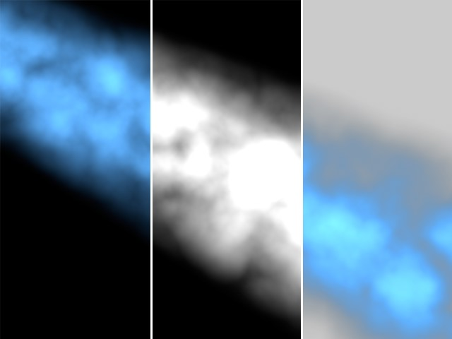From left to right: the rendered image, the alpha channel, the result.
In the illustration, the alpha channel causes a dark seam. This is because both the picture and the alpha channel were rendered with antialiasing. By definition, the color picture and the alpha channel must be multiplied and so the black is calculated twice. You can avoid this dark seam by using the Straight Alpha option instead. Note that straight alphas are suitable for compositing only; they are unusable as conventional pictures.
The entire alpha channel is masked if you use a Sky, Floor, Foreground or Background object in your scene. Do not use any of these objects if you need the alpha channel.
Alpha channels are integrated automatically for TARGA, TIFF, PICT, PSD and QuickTime Movie formats. If you have enabled Separate Alpha or if you have chosen a different picture format, the alpha channel is saved separately to the color picture. These files are indicated by an A_ before the filename, e.g., A_room.tif. Separate alphas are saved in the TIFF format.
The alpha channel can be integrated into a movie only if alpha channels are supported by the chosen codec.
Straight Alpha
You can use this option if straight alphas are supported by your compositing program to avoid the dark seam associated with pre-multiplied alphas. Note that straight alphas are suitable for compositing only; they are unusable as conventional pictures.
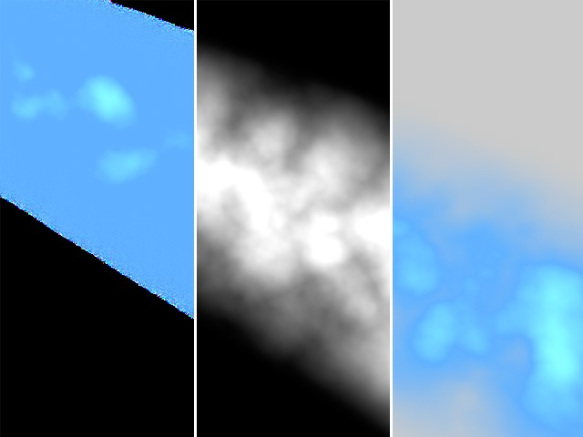From left to right: the rendered image, the alpha channel, the result.
Tip:
Do not use quotation marks (") in your naming conventions.
Attention!
Cinema 4D versions prior to R11.5 handle flat transparent surfaces (masked via alpha mask or
Transparency channel) differently with regard to alpha channel output.
Example: A material with an alpha mask was used to create a hole in a plane that lies with in a large sphere that is used for the background. The rendered result is pictured at the left of the image below. Let’s say you now want to output the scene as an alpha channel in which only the plane with the hole is included. To do so, assign a Compositing tag to the background (i.e. the sphere). In previous versions of Cinema 4D all you had to do was disable the Seen by Camera option. In R11.5 (and above) you also have to disable the Seen by Transparency option in order to generate the alpha channel pictured at the right of the image below:
In order to generate the alpha channel shown at right, both options mentioned above must be disabled in the Compositing tag.
The reason for this lies in the optimization of the renderer, which now calculates flat transparent surfaces (including alpha masks) using the raytracer. The raytracer must explicitly be told by the Compositing tag that the background behind transparent objects should not be visible.
Function available in CINEMA 4D Prime, Visualize, Broadcast, Studio & BodyPaint 3D
Separate Alpha
Alpha channels are usually integrated into alpha-capable image formats — that is, they are saved as part of the image file. However, if you want to save the alpha channel as a separate file, enable this option. In addition to your color picture (e.g., room.tif), you will also have a file containing the alpha channel (e.g., A_room.tif).
Separate alpha channel files will be saved in the same image format as the rendered image (Format).
8 Bit Dithering
Dithering is a process that adds a random pattern to colors to prevent color banding. Although dithering enhances the image quality, it also increases file size. For web graphics in particular, you may want to disable dithering to reduce image file size.
Include Sound
If one of the video formats above is selected, Sound will be used to integrate a sound file into the video.
Tip:
Note: This does not work with Team Render!
Function available in CINEMA 4D Prime, Visualize, Broadcast, Studio & BodyPaint 3D
QuickTime VR Options
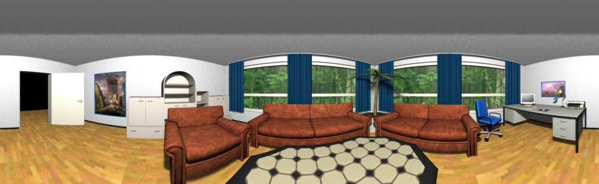
You can use the options on this page to create QuickTime VR panoramas and QuickTime VR object movies.
Lens effects cannot be used with QuickTime VR movies.
If the optional Team Render module is installed, note that QuickTime VR object and panorama movies cannot be rendered using Team Render or using the Physical Renderer.
QuickTime VR technology combines the frames of a 360° horizontal pan in a seamless fashion that enables you to move freely around the virtual scene. You can also zoom.
For these settings to become available, you must set Format on the Save page to QuickTime VR Panorama or QuickTime VR Object.
Generate File
VR
Cinema 4D creates a ready-to-view QuickTime VR panorama or object movie that you can view in QuickTime as soon as it has been rendered and saved.
Intermediate
Cinema 4D creates a panoramic picture or individual object film pictures that you can, say, edit further using Apple’s QuickTime VR tools.
Both
Cinema 4D creates a ready-to-view QuickTime VR film as well as a panoramic picture or individual object film pictures that you can process further using Apple’s QuickTime VR tools.
Apple recommends:
These are Apple’s recommended settings (from The QuickTime FAQ):
- Use focal lengths of 15 mm, 28 mm or 35 mm.
- Do not use fish-eye lenses.
- For interior shots, use a 15 mm lens. This gives you a vertical visibility range of 97°.
- Use a 15 mm lens. This lets you reduce the number of shots in one pan to 12.
- If you are using 35 mm lenses, create additional rings for the view upward and downward.
- For determining the number of frames in a horizontal ring, two adjacent frames should overlap by 30% to 50%.
Horizontal Steps [1..1000]
Start Angle [-∞..+∞°]
End Angle [-∞..+∞°]
When the output format is QTVR Object, here you can specify the number of horizontal steps the camera takes as it moves around the object. For either panorama or object modes, it is also possible to specify Start Angle and End Angle.
Vertical Steps [1..1000]
Start Angle [-90..90°]
End Angle [-90..90°]
These settings apply only to QTVR object movies. Here, Steps specifies the number of rings. A value of 1 is sufficient for a simple object rotation. However, if the viewer should be able to tilt the view, use more rings. Usually, an odd value is best, since it generates as many rings above the horizon ring as below it. To specify the tilting range, enter values in the Start Angle and End Angle boxes. The maximum range is -90° to +90°.
There are two built-in resolutions for QuickTime VR on the Resolution drop-down list (Output page): 1248 x 384 QTVR and 2048 x 768 QTVR. Also on the Output page, set Film Format to Automatic. You can type in your own resolution using the input boxes to the right of the Resolution drop-down list. Ensure that the values you enter are divisible by 4.
Terminology
A panorama is a 360° all-round view of the environment as seen from the camera. The QuickTime VR movie lets the viewer spin around his or her own axis to explore the panorama freely. The camera can also be tilted up or down.
When a QTVR panorama is selected on the Save page, only Start Angle and End Angle are available in the Horizontal and Vertical Settings.
A QuickTime VR object movie enables you to rotate an object interactively using the mouse. For a smooth object movie, try 36 horizontal steps from 0° to 360° and 19 vertical steps from 90° to -90°. This provides good coverage of the object and allows free rotation.
Default X Resolution [2..4000]
Default Y Resolution [2..4000]
These settings define the output resolution of the QuickTime VR movie. The default value is 320 x 240 pixels.
The resolution of the original material from which the QuickTime VR movie is finally rendered is defined by the Resolution setting on the Output page. The Y resolution of the original material should be at least 1.6 times greater than the Y Default Resolution setting.
For a QuickTime Object Movie, place the object at 0,0,0 (world coordinates) and ensure the object is selected in the Object Manager.
If Generate is set to VR or Both, you will create a QuickTime Movie of all frames in the sequence.
When you render QTVR panoramas and QTVR movies, the following limitations apply with regard to antialiasing:
The Max Level parameter determines the maximum antialiasing for colors and edges.
The Max Level cannot be exceeded, even if higher settings are specified in Compositing tags. Compositing tags work within the Min Level to Max Level range only.
The render time depends largely on the Max Level setting. For this reason, avoid using a setting higher than 4x4.
Multi-Pass Image
Save
Multi-pass rendering makes it easy for you to post-edit your renders in compositing software su�ch as Adobe After Effects, Photoshop and Combustion. With Multi-Pass you can split the Cinema 4D rendering into separate layers such as shadows, reflections, highlights and each separate light source. You can save the layers in RLA, RPF, Photoshop (PSD) and BodyPaint 3D (B3D) format.
Suppose you have rendered a complex movie and the reflections look too strong. With Multi-Pass, there’s no need to re-render the Cinema 4D scene. Instead, simply reduce the opacity of the reflections layer in your compositing package. Or why not include alternative lighting setups in the same rendering? You will then be able to select the best setup during post-editing.
Multi-pass is ideal for trying out various lighting setups for your rendering The setups will be rendered more quickly as a single Multi-Pass file than as separate projects.
Tip:
When rendering Multi-Pass via Team Render a relative path, not an absolute path must be defined.
File
This is where you set the save path for the file.
Multi-layer files require much more space than single-layer files. Prior to rendering, check that you have sufficient storage space, especially when rendering Multi-Pass animations.
A relative path must be entered here when rendering with Team Render.
Format
选项…
This button is greyed out unless the format chosen has extra options. Click Options to access these.
File
This path defines where the rendered still or animation will be saved. Note for animations in particular that a location is selected that offers enough disk space for the entire animation.
Tip:
Use
可变路径和文件名 to automatically associate file and path names with, for example, the type of Multi-Pass that is defined.
See also File above regarding file names and paths.
To output the passes in Photoshop 7 format, set Format to Photoshop (PSD), click the Options button and enable the Photoshop 7 option in the dialog that appears. This will ensure the Linear Dodge blend mode is used where appropriate.
Depth
Sets the channel depth to 8, 16 or 32 bits.
Function available in CINEMA 4D Prime, Visualize, Broadcast, Studio & BodyPaint 3D
Multi-Layer File
If this option is enabled, all layers are saved in a multi-layer file. In addition, you must set Format on the Output page to Photoshop (PSD), BodyPaint 3D (B3D) or TIFF. If the option is disabled, Cinema 4D creates a separate file for each pass using the Format setting on the Save page. A suffix is added to each of the filenames to differentiate them.
The image may look different when viewed in another application depending on which blend modes are supported. This can be due to non-existing mix modes or other factors.
Tip 2.:
Note that 32-bit multi-layers can be problematic in conjunction with a disabled
Linear Workflow option due to the fact that Photoshop can only import *.psd files correctly but cannot display them correctly. As soon as Linear Workflow is enabled or other bit depths are used, it will work correctly.
Layer Name as Suffix
If your chosen format does not support multi-layers, each layer will be saved as a separate file. If this option is enabled, the name of the layer, such as _diffuse or _refraction, is added after the filenames.
RELEASE 17
User Defined Layer Name
If this option is enabled, the Multi-Pass names that you defined (double-click on the Multi-Pass name to rename it) will be used instead of the default Multi-Pass names.
Straight Alpha
This option is only available if you have activated the Alpha Channel option. Whether or not you activate Straight Alpha does not play a role.
With the Straight (Unmultiply Alpha) (Multi-Pass tab) option you define whether or not the corresponding Multi-Passes should be pre-multiplied with reference to the alpha channel that is saved.
Compositing Project File
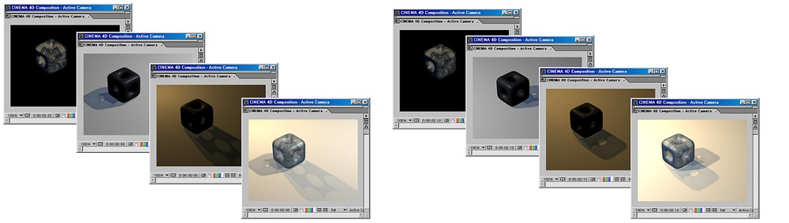A compositing project file is made up of multiple layers. Each layer can be edited separately.
Cinema 4D supports the following video compositing programs:
- Adobe After Effects (CS3 or higher): Multi-Pass files, camera data, lights and Null Objects (see also After Effects with regard to the various exchange possibilities).
- The Foundry Nuke (tested for v 6.3 and higher): Multi-Pass files. Camera data, lights, objects via separate FBX file.
- Apple Final Cut Pro (4.0 or higher; Cinema 4D Mac version only): Multi-Pass files.
- Apple Motion Version 3: Multi-Pass files, camera data, lights and objects as NULL objects.
- Appke Shake Versions 3.5 and 4: Multi-Pass files.
- eyeon’s Digital Fusion from V5.0: Multi-Pass files.
Cinema 4D can render various Multi-Passes and save them as separate files (bitmaps or videos). The passes can then be loaded into one of the compositing packages listed above. In the compositing package, you can then edit the passes separately and apply a wealth of effects to them.
Other compositing applications can open the file without plugins.
You can also export Cinema 4D’s camera and lights, including animation, and edit them in After Effects or Combustion.
The following camera data is supported:
- Camera position.
- Camera orientation.
- Focal length.
- Camera to target distance (provided the Cinema 4D scene used a target camera).
The following types of light are supported:
- Point.
- Parallel.
- Spot.
Exporting the Multi-Passes
To export the Multi-Passes from Cinema 4D:
- In the Render Setting, on the Multi-Pass page, use the Channels drop-down list to choose which passes should be rendered. Disable the Multi-Layer File option (each pass must be saved as a separate file) in the Save tab.
Set Format to the desired file format, such as QuickTime Movie.
Set Path to the path where the passes should be saved.
- Make sure that the Save option in the Multi-Pass sub-menu is enabled and choose your compositing application. Render the image or animation. Select the same save path as in the 常规图像 sub-menu so the compositing file lands in the same directory as all related files.
If Relative is enabled (Save page), the start and end time of the Cinema 4D animation will also be transferred (with After Effects, version CS3 or higher is required for this functionality). Otherwise, the animations will always begin at frame 0 in the compositing program.
Save FBX File
If you create a compositing file for Nuke, it will not contain 3D information for cameras, lights or objects. If this option is enabled, this information can be extracted from a FBX file. A separate FBX file will then be written.
Pressing the Save Project 文件… button lets you create a compositing file without having to render the entire scene. However, this only makes sense if all passes have already been rendered. For example, if you have already rendered a complete animation using Team Render, including all Multi-Passes, you can press this button to generate the correct compositing file.
- Import the compositing file put out by Cinema 4D into your compositing application.
To import the Multi-Passes into your compositing package:
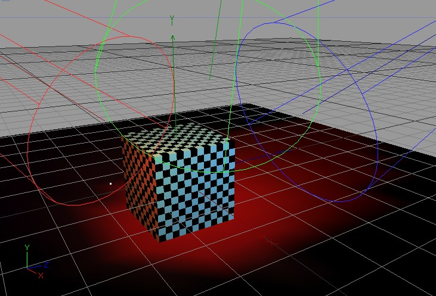The project in Cinema 4D.
After Effects
Tip:
Note that After Effects is only designed for use with the
exchange described above in point 2.
In After Effects, import the .aec file (File / Import / File).
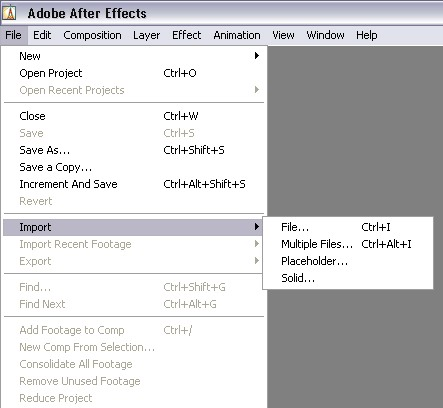The project in After Effects.
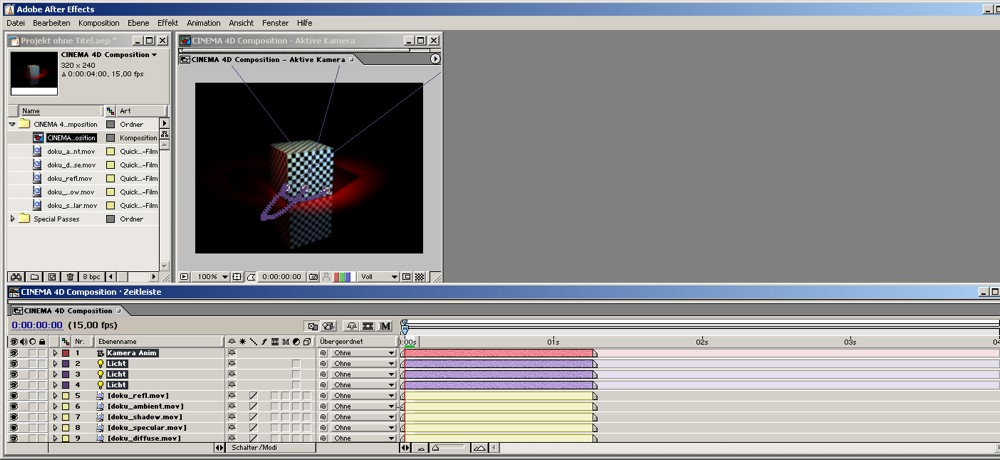
For After Effects you must copy the following plugin (located in the Cinema 4D program directory in the "Exchange Plugins/aftereffects/importer" folder; select the one that corresponds to your operating system and After Effects version) into the After Effects plugin directory (if this does not exist, use the "Effect" folder):
- PC: "C4Dimporter.aex"
- Mac OS: "C4Dimporter.plugin" (may have to be unzipped first)
Other compositing applications can load the data without a plugin.
Additional functionality:
- Shadow density assigned to light sources will also be exported (animated)
- The "render status" in the Object Manager will be taken into consideration. In the following example, only Object 2 will be exported:
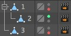
- All existing cameras will be exported (if not disabled by the "render status" described above)
- XRefs are supported (i.e. will be exported)
- Logical naming of lights and directories in After Effects
- See also here
- Stereoscopy is supported: numerous stereoscopic channels and Multi-Passes (see also Stereoscopy) will be loaded into After Effects in the correct combination and clearly named.
- The Stage object will be evaluated with regard to cameras.
See After Effects for more information about the connectivity of After Effects and Cinema 4D.
Color, shadow density, angle and intensity animations of light sources are supported Unicode is supported.
Tip:
Make sure that the "Linear" Working Space color (which only works if a work space color exists; this should be set to sRGB) is enabled in After Effects when using
Linear Workflow.
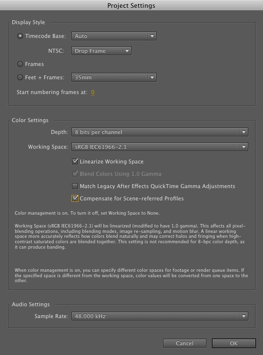
Motion
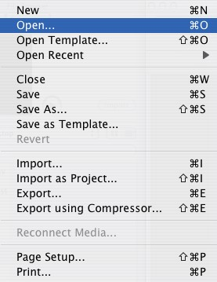
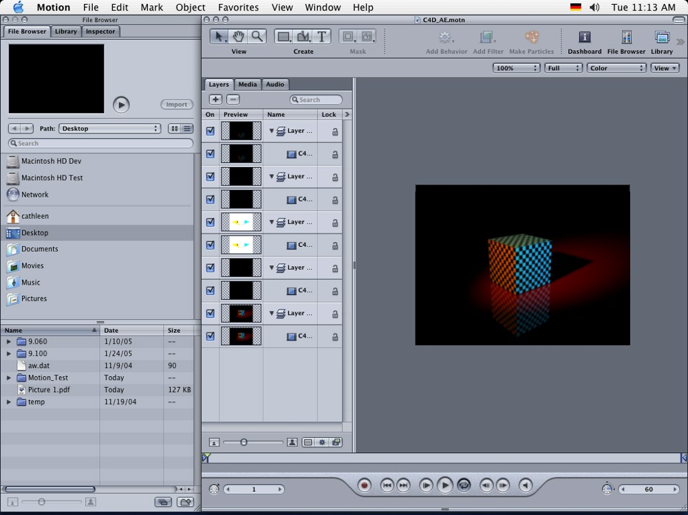
Nuke
Open the corresponding *.nk-file:
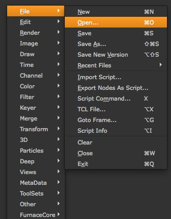
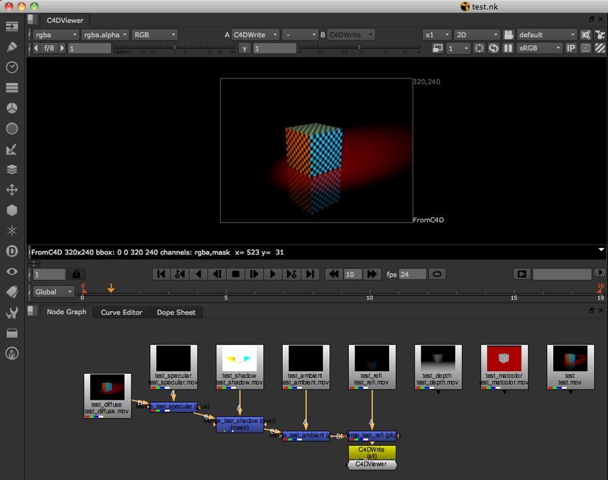
Final Cut Pro
In Final Cut Pro, import the .xml file (File / Import / XML) and ignore the alert that appears.
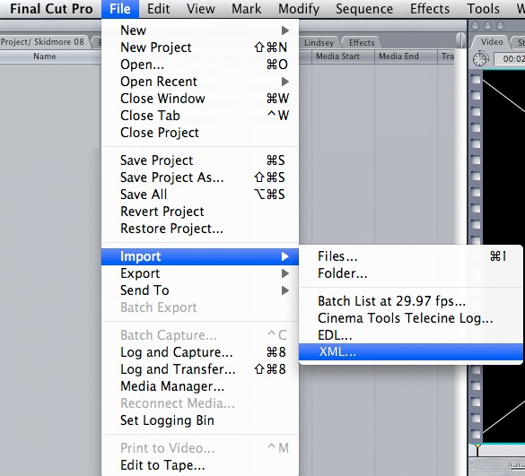
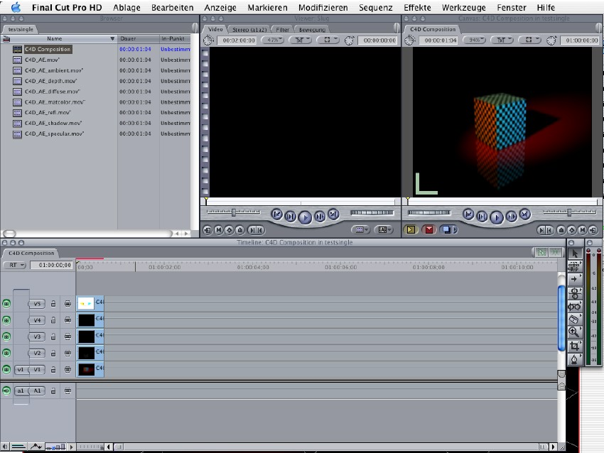The project in Final Cut Pro.
Digital Fusion
Use the Open command to open the *.comp file exported from Cinema 4D.
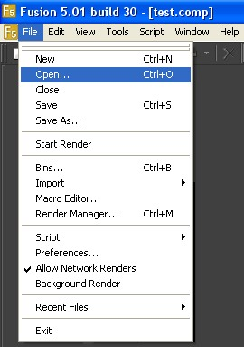
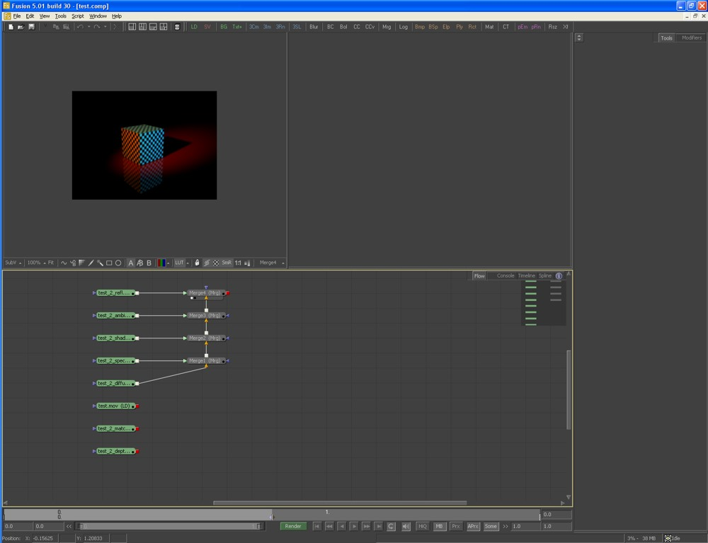
Include Timeline Marker
If you have set Marker in the Timeline, these will be included in the compositing file, including their names.
Include 3D Data
Use this setting to define whether cameras, lights or objects should be exported. Objects other than lights and cameras will be exported as Null Objects if an External Compositing tag has been assigned to them (see below).
Relative
Let’s say your scene contains two animated cameras. The first camera is animated from frame 20 to frame 50, the second from frame 2 to frame 117. The Relative setting would be used to decide between which frames the animation should run in the compositing application: Between 20 and 50 or 2 and 117 (Relative active) or between 0 and 30 and 0 and 115 (Relative not active, animation begins at frame 0). Of course this setting is not restricted to animated cameras.
Movies will be imported faster than picture sequences.
The compositing programs will import the composition correctly provided that the compositing program is on the same computer as Cinema 4D. When importing into After Effects, the compositing project file must be in the same folder as the passes; otherwise, the picture sequences or videos must be replaced manually.
General Information
Compositing programs import compositions with no further ado as long as Cinema 4D and the compositing program are located on the same computer. Otherwise the compositing file and all files linked must lie in the same directory (applies to After Effects) or the images/videos must be replaced manually in the compositing program.
Limitations
- NET cannot write the compositing project file. For network rendering, generate the project file manually by clicking the Save button on the Save page of the render settings. You can save the project file at any time — even before you have rendered the passes. Missing passes are represented by stand-in frames in After Effects, which you can replace at any stage.
- QTVR cannot be used with compositing project files (QTVR does not support Multi-Passes).
- B3D image sequences are not supported.
Save
Define whether or not compositing files should be saved (this does not work when rendering via Team Render).
Target Application
Select your target compositing application. Cinema 4D will automatically output the compositing files in the correct format.
Save Project 文件…
Lets you create "compositing" files without having to render the entire scene. However, this only makes sense if you have already rendered all passes.
If you have already rendered a large animation, incl. Multi-Passes, using Team Render, clicking this button will create the corresponding compositing file.
Note, however, that the renderer must still be started in the background, which can take quite a while when using the Physical Renderer. You can work around this by using the Standard Renderer, which requires a much shorter preparation time.